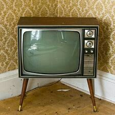

Vladimir Zworykin membawa inovasi lebih lanjut dengan memperkenalkan tabung pemindaian elektronik pada tahun 1929, yang membuka jalan bagi pengembangan televisi berbasis elektronik yang lebih praktis. Perkembangan teknologi televisi terhenti selama Perang Dunia II, tetapi setelah perang, industri televisi berkembang pesat. Pada tahun 1950-an, televisi menjadi barang konsumen yang populer, dan program-program televisi mulai ditampilkan secara reguler. Sistem siaran berwarna NTSC diperkenalkan pada tahun 1954, memulai era televisi berwarna. Pada tahun 1960-an, televisi berwarna mulai populer di rumah-rumah.
Era digital dan kabel muncul pada akhir abad ke-20, diikuti oleh adopsi televisi digital dan High Definition Television (HDTV). Perkembangan teknologi digital membawa perubahan signifikan dalam kualitas gambar dan suara. Pada awal abad ke-21, munculnya layanan streaming seperti Netflix dan Hulu membawa transformasi baru dalam cara kita mengonsumsi konten televisi, memperkenalkan era baru dalam sejarah televisi.\ Sejak penemuannya, televisi telah menjadi salah satu aspek paling berpengaruh dalam budaya populer dan media modern.